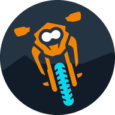
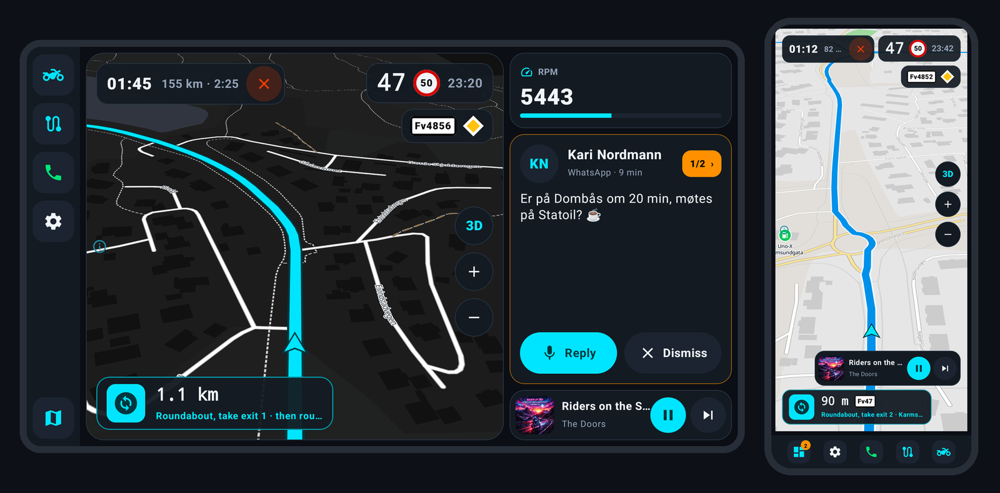

Curveon
Motorsykkelnavigasjon som elsker svingete veier, og som virker uten dekning.
Curveon gjør telefonen din, eller et Android-nettbrett på styret, til et instrumentbord for turen: kart, svingvis navigasjon, musikk, meldinger og samtaler på ett sted. Gratis, åpen kildekode og laget for motorsyklister.
Android 10 eller nyere · mobil eller nettbrett · norsk og engelsk

Hvorfor Curveon?
- Finner de morsomme veiene. Velg Raskest, Svingete eller Veldig svingete, og se alle tre ved siden av hverandre før du kjører.
- Virker uten nett. Last ned landene du kjører i én gang. Kart, ruter og søk virker i fjellet, i tunneler og i utlandet.
- Alt på én skjerm. Musikk, meldinger og samtaler fra telefonen vises ved siden av kartet, med store knapper du treffer med hansker på.
- Kjør sammen. Legg til venner, start en gruppe og se hverandre på kartet. Del en rute, og alle får endringene med en gang. Alt er ende-til-ende-kryptert.
- Planlegg på din måte. Dra ruten dit du vil, tegn en rundtur med ett fingerstrøk, ta vare på turer til senere og kjør hvilket som helst GPX-spor.
Personvern
Ingen kontoer, ingen reklame og ingen analyse. Les personvernerklæringen.
Curveon
Motorcycle navigation that loves curvy roads, and works without a signal.
Curveon turns your phone, or an Android tablet on the handlebars, into a dashboard for the ride: maps, turn-by-turn navigation, your music, messages and calls, all in one place. Free, open source and made for riders.
Android 10 or newer · phone or tablet · English and Norwegian
Why Curveon?
- Finds the fun roads. Choose Fastest, Curvy or Super curvy and see all three side by side before you go.
- Works offline. Download the countries you ride in once. Maps, routes and search then work in the mountains, in tunnels and abroad.
- Everything on one screen. Music, messages and calls from your phone show up next to the map, with big buttons you can hit with gloves on.
- Ride together. Add friends, start a group and see each other on the map. Share a route and everyone gets the changes at once. Everything is end-to-end encrypted.
- Plan your way. Drag the route where you want it, draw a roundtrip with one finger, keep trips for later, and ride any GPX track.
Privacy
No accounts, no advertising and no analytics. Read the privacy policy.